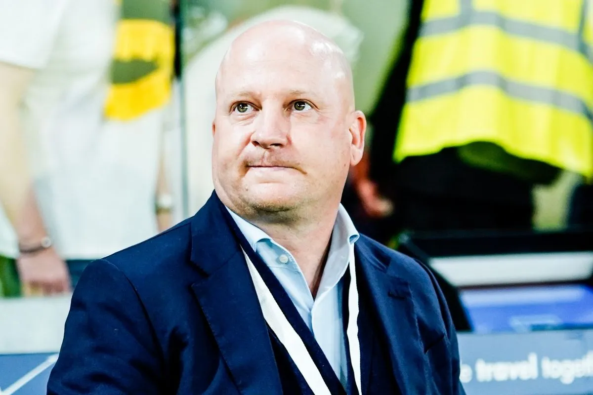
Η τακτική πανωλεθρία της ΑΕΚ και η διπλή υπόσχεση του Νίκολιτς που κινδυνεύει με αθέτηση | Sport24
Διάσαβε το άρθρο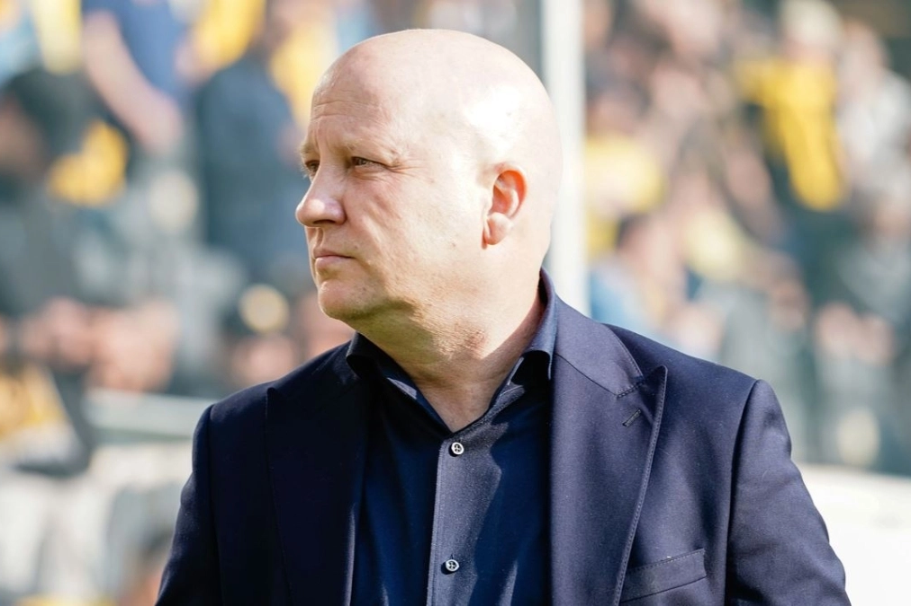
Νίκολιτς: «Είμαστε μια ομάδα πολεμιστών με τρομερή χημεία με τον κόσμο» | Gazzetta
Διάσαβε το άρθρο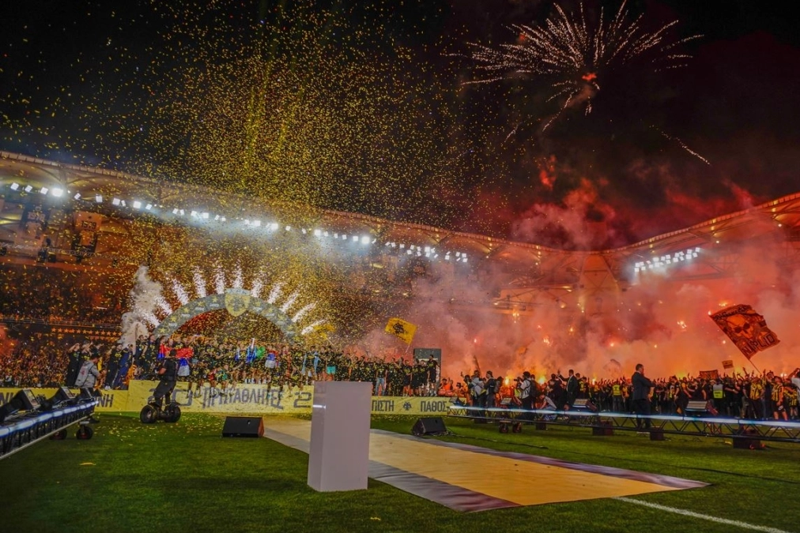
ΑΕΚ: Το 14ο μπήκε στη συλλογή της σε μια φαντασμαγορική φιέστα στη Νέα Φιλαδέλφεια! | Gazzetta
Διάσαβε το άρθρο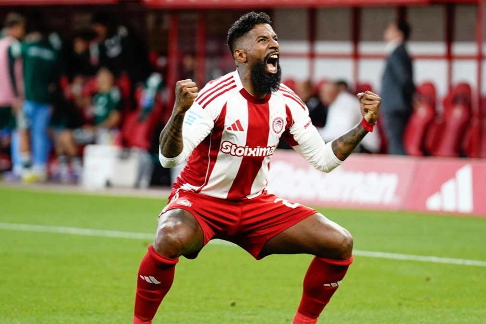
Ολυμπιακός - Παναθηναϊκός: Ο Ροντινέι το 1-0 στο τέλος του ημιχρόνου | Gazzetta
Διάσαβε το άρθρο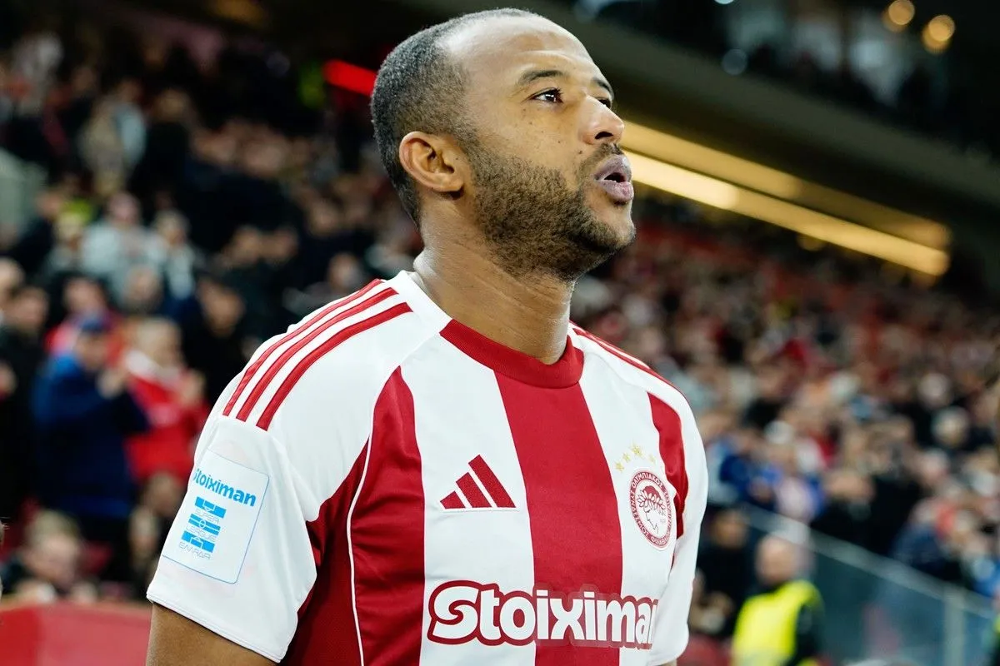
Ολυμπιακός: Το ντέρμπι των αιωνίων μπορεί να του αλλάξει την μοίρα | Sport24
Διάσαβε το άρθρο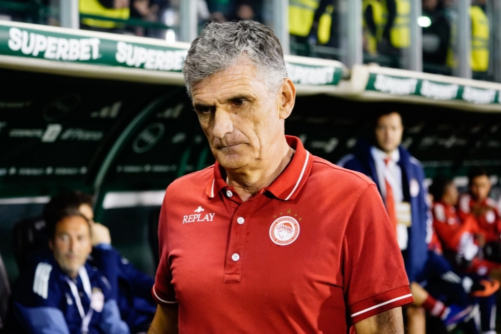
Μεντιλίμπαρ: «Είχαμε υποχρέωση να πάρουμε το ματς μετά τη νίκη της ΑΕΚ | Gazzetta
Διάσαβε το άρθρο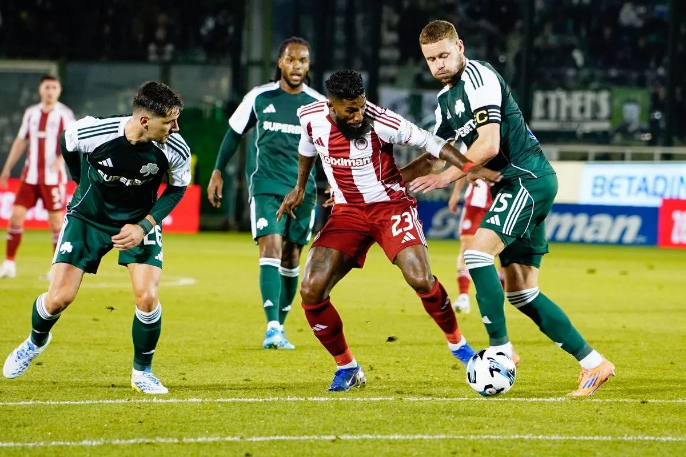
Παναθηναϊκός - Ολυμπιακός: Ο Ροντινέι έμεινε όρθιος σε διπλή μονομαχία και με υπέροχο τελείωμα έδωσε αέρα δύο γκολ στους Πειραιώτες | Sport24
Διάσαβε το άρθρο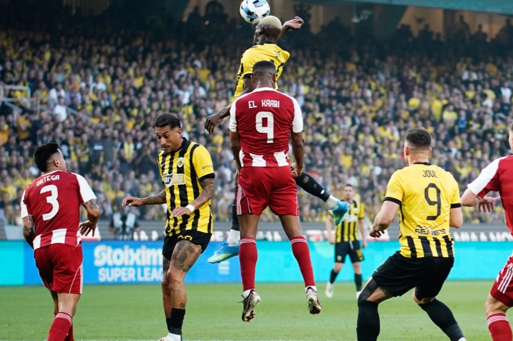
Ολυμπιακός: Ο «καλός» Ποντένσε, το λάθος Τζολάκη και «τα ίδια» Ελ Κααμπί κι Ορτέγκα | Gazzetta
Διάσαβε το άρθρο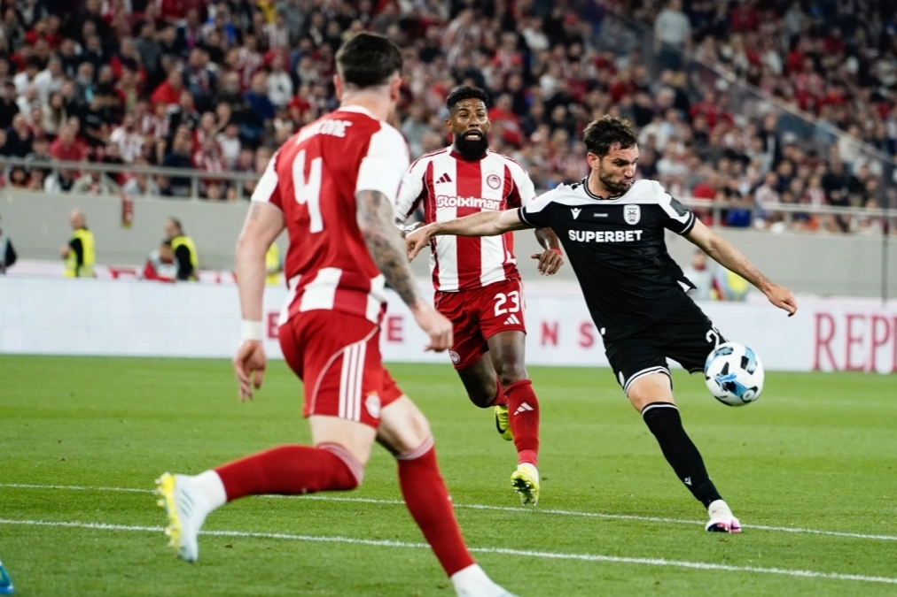
Ολυμπιακός - ΠΑΟΚ 1-1: Η ισοβαθμία και τι χρειάζεται η κάθε ομάδα | Gazzetta
Διάσαβε το άρθρο
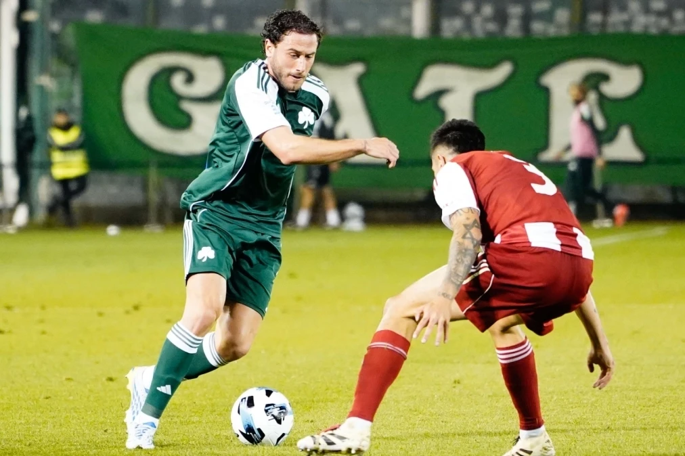
Χόνβεντ - Απόλλων Σμύρνης 16-12: Ήττα και στον μικρό τελικό | Gazzetta
Διάσαβε το άρθροΑΕΚ: Χωρίς Νίκολιτς με ΟΦΗ | Sport24
Διάσαβε το άρθρο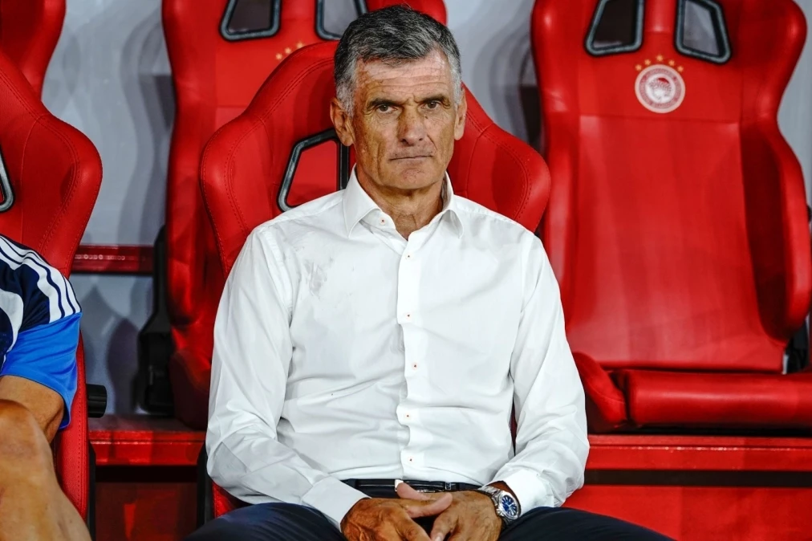
Η Ντε Άκερ Μπολόνια κατέκτησε το Conference Cup στο Παλαιό Φάληρο | Gazzetta
Διάσαβε το άρθρο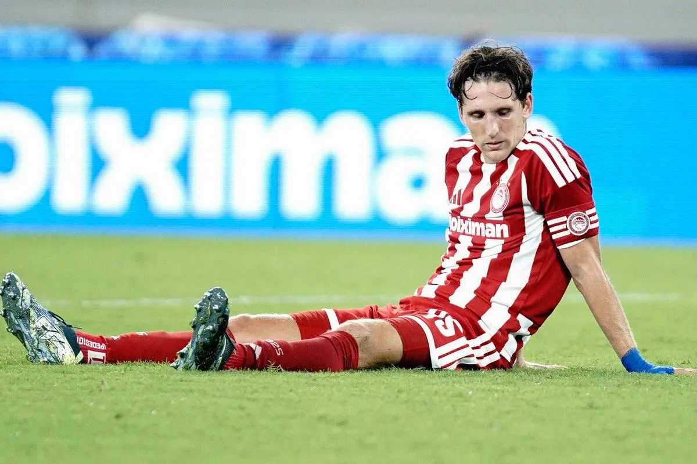
Παναθηναϊκός - Απόλλων Σμύρνης 12-9: Το «τριφύλλι» κόντρα στον Ολυμπιακό στους τελικούς | Gazzetta
Διάσαβε το άρθρο